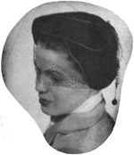
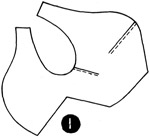
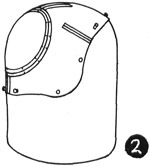
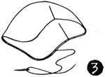
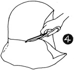

1952—How to Make Hats
by Ruby Carnahan
Calot—Open or Closed Crown
CALOT—OPEN OR CLOSED CROWN
This calot may be made of any material, fur or felt, pique, taffeta, velvet, wool, cotton, etc.
MATERIAL REQUIRED
- 3/8 yard of material for outside of calot
- 3/8 yard of crinoline for foundation
- 3/8 yard of lining material
- 3/4 yard of ribbon for headband
FOUNDATION
Lay pattern on crinoline. Mark around pattern on crinoline and cut out.
(Illus. 1) Baste seams together as indicated on pattern, then stitch. When making open crown calot, turn edge under around opening and baste flat. If crown is closed, cut crinoline circle like pattern circle. Baste circle on calot and stitch.
(Illus. 2) Pull this crinoline foundation on correct headsize block. Steam foundation, pulling and pinning it down to fit block.
COVERING FOUNDATION
Lay calot pattern on fabric for covering. Mark around pattern on fabric and cut out. Baste and stitch like foundation. Place on block wrong side out and steam press all seams open. Remove from block, turn right side out and slip covering over foundation. Pin crinoline foundation and fabric foundation together. Turn edge around face under and hem to underside. (Illus. 3) Steam this edge.
LINING
Cut lining from same pattern and sew together as described above. Place lining on block and steam press. Remove from block and slip lining inside calot. Turn lining edges under and slip stitch around edge.
FELT CALOT MADE FROM THIS PATTERN
Use a small felt hood. Wrap felt hood in a damp cloth for several hours before blocking. Pull felt hood over block and steam until soft and pliable, pulling felt down to fit block. Pin felt to block around the bottom and let dry on block. Cut a crinoline foundation from pattern as explained. Sew and block foundation as above. When felt is dry, slip blocked crinoline foundation over felt on block and mark around crinoline on felt with tailor's chalk. (Illus. 4) Remove felt from block and cut off excess felt on this line. Turn edge under 1/2" around face and hem to under side. Block a headband ribbon and sew around inside headsize.
Brim pattern for Felt Calot
Cut open bottom of felt hood and press flat. Place brim pattern on felt. Mark around pattern with tailor's chalk and cut out. Using the same pattern, cut out two more identical sections (three brim sections in all). Bind each section with No. 3 grosgrain ribbon (instructions for ribbon binding on page 59). Adjust and pin each section around crown as pictured and sew.